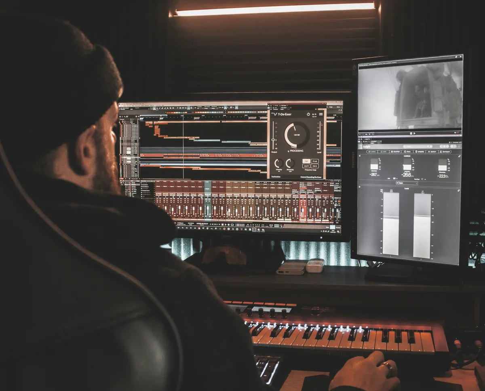
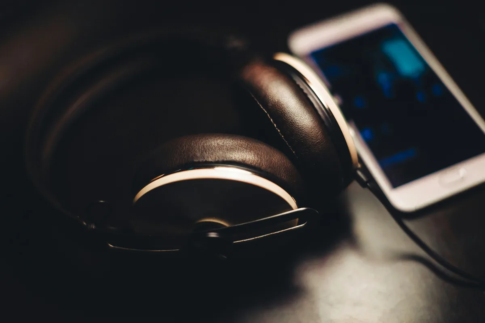
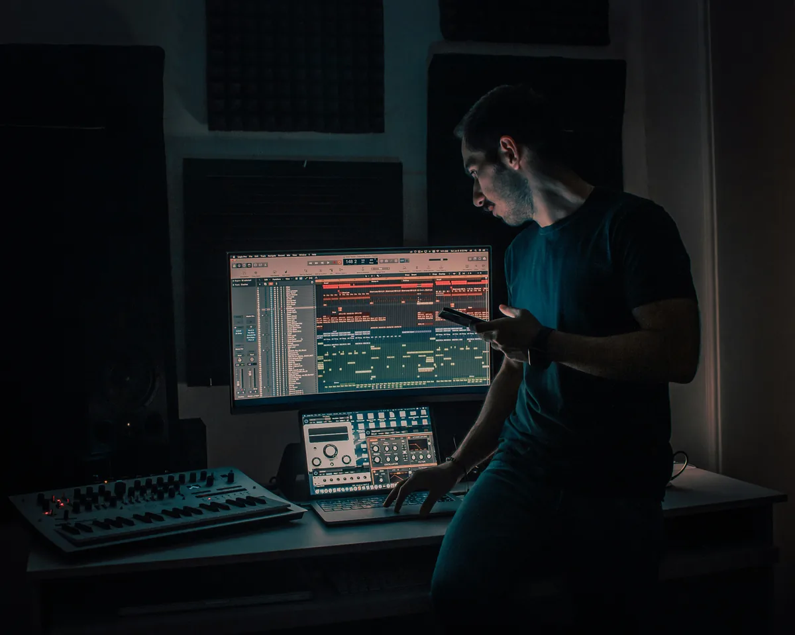

Prawa autorskie to temat, który większość producentów ignoruje - dopóki coś nie pójdzie nie tak. Film na YouTube zablokowany przez Content ID, utwór usunięty ze Spotify, pozew za niezacleared sample - to nie są rzadkie przypadki. Zrozumienie podstaw prawa autorskiego nie wymaga studiów prawniczych, ale wymaga wiedzy o kilku kluczowych pojęciach. Ten artykuł tłumaczy je językiem producenta, nie prawnika.
Jak powstaje prawo autorskie do muzyki
W Polsce - i w większości krajów świata - prawo autorskie powstaje automatycznie w momencie stworzenia utworu. Nie musisz nigdzie rejestrować swojej muzyki, składać wniosków ani płacić opłat. Wystarczy, że skomponujesz melodię, napiszesz tekst lub nagrasz utwór - i od tej chwili jesteś jego autorem z pełnią praw wynikających z ustawy o prawie autorskim i prawach pokrewnych.
To ważna informacja, bo wiele osób myśli, że "niezarejestrowana" muzyka nie jest chroniona. Jest - i to od razu. Problem pojawia się wtedy, gdy trzeba udowodnić, że coś stworzyłeś jako pierwszy i kiedy. Dlatego warto zachowywać pliki projektów z datami, wysyłać sobie e-maile z attachmentami czy korzystać z platform, które automatycznie datują upload.
Ustawa rozróżnia dwa rodzaje praw autorskich: prawa osobiste (niezbywalne - zawsze pozostają przy twórcy, np. prawo do oznaczenia utworu swoim nazwiskiem) i prawa majątkowe (zbywalne - możesz je sprzedać, przenieść lub udzielić licencji). W praktyce to prawa majątkowe są przedmiotem umów z wytwórniami, serwisami streamingowymi i innymi podmiotami.
Prawa autorskie do muzyki - dwie warstwy
To, co potocznie nazywamy "prawami do piosenki", w rzeczywistości składa się z dwóch niezależnych warstw. Zrozumienie tego podziału jest kluczowe - szczególnie przy korzystaniu z cudzej muzyki.

Pierwsza warstwa to prawa do kompozycji - czyli do melodii i tekstu. Należą do kompozytora i autora tekstu (lub ich wydawcy muzycznego). Jeśli chcesz nagrać cover czyjejś piosenki, potrzebujesz licencji właśnie na tę warstwę.
Druga warstwa to prawa do nagrania (tzw. prawa pokrewne, master rights) - czyli do konkretnego nagrania dźwiękowego. Należą zazwyczaj do artysty wykonującego lub wytwórni, która sfinansowała nagranie. Jeśli chcesz użyć w swoim utworze fragmentu cudzego nagrania (sample), potrzebujesz licencji na tę warstwę.
Przykład: chcesz użyć fragmentu oryginalnego nagrania "Smells Like Teen Spirit" Nirvany w swoim remixie. Potrzebujesz dwóch zgód - od właściciela praw do kompozycji (wydawca muzyczny) i od właściciela praw do nagrania (wytwórnia - w tym przypadku Universal Music Group). Oba clearance są osobne, oba kosztują i oba mogą zostać odmówione.
ZAIKS - jak działa polska organizacja zbiorowego zarządzania
ZAIKS (Związek Autorów i Kompozytorów Scenicznych) to polska organizacja zbiorowego zarządzania prawami autorskimi. Jej zadaniem jest pobieranie wynagrodzeń od podmiotów, które komercyjnie korzystają z muzyki - radia, telewizji, restauracji, sklepów, serwisów streamingowych - i wypłacanie ich twórcom.
Jeśli twoja muzyka leci w radiu, jest odtwarzana w restauracji lub streamowana na platformach, które mają umowy z ZAIKS-em - organizacja powinna zebrać te tantiemy i przekazać je tobie. Żeby to jednak działało, musisz być członkiem ZAIKS lub przynajmniej zarejestrować swoje utwory w ich bazie.
Rejestracja w ZAIKS jest dobrowolna, ale bez niej pieniądze z tantiem mogą po prostu przepaść - organizacja nie wie, komu je wypłacić. Procedura rejestracji nie jest skomplikowana: wypełniasz formularz online, podajesz dane o sobie i o swoich utworach (tytuł, czas trwania, procentowy udział współtwórców jeśli utwór ma kilku autorów). Aktualne informacje o warunkach członkostwa i rejestracji znajdziesz na zaiks.pl - zasady i opłaty zmieniają się, więc zawsze sprawdzaj tam, nie opieraj się na nieaktualnych źródłach.
Obok ZAIKS-u istnieje też STOART (prawa wykonawców) i ZPAV (prawa do nagrań fonograficznych). Każda z tych organizacji zarządza inną warstwą praw - co znowu wraca do wspomnianego wcześniej podziału na kompozycję i nagranie.
Sampleowanie - największa pułapka dla producentów
Sample clearance to temat, przy którym wielu producentów popełnia kosztowne błędy. Zasada jest prosta i twarda: jeśli używasz fragmentu cudzego nagrania w swoim utworze - nawet jednej sekundy, nawet mocno przetworzonej - technicznie naruszasz prawa autorskie, jeśli nie masz na to zgody.
"Ale przecież nikt tego nie usłyszy" - to argument, który nie ma żadnej wartości prawnej. "To tylko dwa takty" - też nie ma znaczenia. Prawo nie wprowadza progu minimalnej długości sampla, poniżej którego byłby on dozwolony. Jeden charakterystyczny beat, jedna rozpoznawalna linia melodyczna - wystarczy.
W praktyce mała scena niezależna rzadko kończy się pozwem. Problem pojawia się w momencie gdy twoja muzyka zaczyna zarabiać - na streamingu, w reklamie, w filmie. Im większy sukces, tym większe ryzyko że właściciel praw zauważy sample i zażąda rozliczenia - często wstecz, z odsetkami.
Legalne wyjście to albo sample clearance (uzyskanie zgody od obu właścicieli praw - do kompozycji i do nagrania, co jest drogie i często niemożliwe przy niezależnych producentach) albo korzystanie z sample packów z licencją royalty-free. Sample packi royalty-free to biblioteki dźwięków sprzedawane z licencją pozwalającą na komercyjne użycie w twoich utworach bez dodatkowych opłat - to standardowe narzędzie pracy w nowoczesnej produkcji.
Cover songi - zasady i licencje
Nagranie covera - własnej wersji cudzej piosenki - jest prawnie prostsze niż sampleowanie, ale też wymaga przestrzegania zasad. Kiedy nagrywasz cover, korzystasz z cudzej kompozycji (melodii i tekstu), ale tworzysz własne nowe nagranie - nie używasz oryginału.
W Polsce i większości krajów istnieje tzw. licencja przymusowa (mechaniczna) na nagrywanie coverów. Oznacza to, że możesz legalnie nagrać cover praktycznie każdej piosenki bez pytania o zgodę, ale musisz zapłacić tantiemy mechaniczne właścicielowi praw do kompozycji. W Polsce te kwestie reguluje między innymi ZAIKS.
Na platformach streamingowych sytuacja jest uproszczona - serwisy takie jak Spotify czy Apple Music mają zbiorcze umowy licencyjne z organizacjami zbiorowego zarządzania, które obejmują covery. Jeśli dystrybuujesz cover przez DistroKid lub podobną platformę, sprawdź czy oferują usługę licencjonowania coverów (DistroKid ma taką opcję za dodatkową opłatą). Bez niej możesz naruszyć prawa nawet przy dobrej woli.
Na YouTube cover bez clearance może skutkować roszczeniem Content ID od właściciela praw - co zazwyczaj oznacza że przychody z reklam trafiają do niego, a nie do ciebie, ale film pozostaje online. To nie to samo co usunięcie - ale warto wiedzieć czego się spodziewać.
YouTube Content ID - jak działa i co zrobić gdy dostaniesz roszczenie
Content ID to system YouTube, który automatycznie skanuje wszystkie wgrane filmy i porównuje je z bazą danych nagrań zarejestrowanych przez właścicieli praw. Jeśli system wykryje dopasowanie - nawet fragmentaryczne - właściciel praw może zgłosić roszczenie (claim), co zazwyczaj skutkuje przekierowaniem przychodów z reklam do niego lub zablokowanie filmu w wybranych krajach.

Content ID działa automatycznie i często myli się - rozpoznaje podobne bity, zbliżone melodie, a nawet ambientowe dźwięki. Dostanie roszczenia Content ID nie oznacza że coś zrobiłeś źle - ale wymaga reakcji.
Jeśli roszczenie jest słuszne (faktycznie użyłeś chronionego materiału bez licencji) - masz kilka opcji: zaakceptować je (właściciel praw dostaje przychody z reklam), usunąć sporny fragment lub usunąć film. Jeśli roszczenie jest bezzasadne (np. dotyczy muzyki royalty-free którą kupiłeś z licencją, albo jest fałszywe) - możesz złożyć dispute, czyli odwołanie. Do odwołania dołącz dowód licencji lub wyjaśnienie dlaczego roszczenie jest niesłuszne. Właściciel praw ma wtedy określony czas na odpowiedź - jeśli nie zareaguje, roszczenie jest cofane.
Ważna rzecz: nigdy nie kupuj "licencji royalty-free" od podejrzanych źródeł tylko dlatego że są tanie. Niektóre firmy sprzedają licencje na muzykę, do której nie mają praw - a roszczenie Content ID i tak przyjdzie, bo prawdziwy właściciel jest w systemie.
Creative Commons - wolne licencje i jak z nich korzystać
Creative Commons (CC) to system licencji, który pozwala twórcom określić z góry, co inni mogą robić z ich muzyką - bez konieczności każdorazowego pytania o zgodę. Licencje CC są powszechnie stosowane na platformach takich jak Bandcamp, SoundCloud czy Freesound.
Każda licencja CC składa się z kombinacji czterech elementów:
- BY (Attribution) - musisz podać autora. Ten warunek jest obecny we wszystkich licencjach CC.
- NC (Non-Commercial) - możesz używać tylko niekomercyjnie. Jeśli licencja zawiera NC, nie możesz zarabiać na materiale.
- ND (No Derivatives) - nie możesz tworzyć utworów zależnych (remixów, coverów, sampli).
- SA (Share Alike) - możesz tworzyć remiksy, ale musisz je wydać na tej samej licencji.
Najpopularniejsze kombinacje w muzyce to CC BY (możesz robić wszystko, byle podać autora), CC BY-NC (możesz używać niekomercyjnie z podaniem autora) i CC BY-SA (możesz remixować, ale remix musi być na tej samej licencji).
Jeśli szukasz muzyki royalty-free do filmów, podcastów czy projektów - szukaj licencji CC BY lub CC0 (domena publiczna, zero ograniczeń). Unikaj NC jeśli projekt ma jakikolwiek komercyjny charakter - granica między "komercyjnym" a "niekomercyjnym" bywa nieoczywista i może być przedmiotem sporu.
Muzyka na streamingu - tantiemy i jak je zbierać
Kiedy twoja muzyka trafia na Spotify, Apple Music, Tidal i inne platformy, generuje dwa rodzaje tantiem - i wiele osób nie zdaje sobie sprawy że te dwa strumienie pieniędzy trafiają różnymi drogami.
Pierwszy strumień to tantiemy mechaniczne - wynagrodzenie za reprodukcję kompozycji (melodii i tekstu). W Polsce zbiera je ZAIKS i przekazuje autorom. Żeby je otrzymać, musisz być zarejestrowany w organizacji zbiorowego zarządzania.
Drugi strumień to tantiemy za nagranie - wynagrodzenie za odtworzenie konkretnego nagrania. Te trafiają do dystrybutora (DistroKid, TuneCore, itp.), który przekazuje je tobie jako właścicielowi nagrania po potrąceniu swojej prowizji.
Jeśli jesteś jednocześnie kompozytorem i wykonawcą swojej muzyki - masz prawo do obu strumieni. Ale jeśli nie jesteś zarejestrowany w ZAIKS lub odpowiedniej organizacji w swoim kraju, tantiemy mechaniczne mogą po prostu nie dotrzeć do ciebie - zostaną "osierocone" lub trafią do puli zbiorowej.
Dla producentów muzycznych działających głównie na rynku anglojęzycznym kluczowe są organizacje takie jak ASCAP, BMI lub SESAC w USA, PRS w Wielkiej Brytanii, SOCAN w Kanadzie. Jeśli twoja muzyka ma globalny zasięg, warto sprawdzić czy ZAIKS ma umowy reciprocal z organizacjami w krajach, gdzie zbierasz największy ruch - zazwyczaj tak jest, ale warunki się różnią.
Praca na zlecenie - kto ma prawa do muzyki
Jeśli tworzysz muzykę na zlecenie - do filmów, reklam, gier, jako producent bitów dla innych artystów - kwestia własności praw jest szczególnie ważna i powinna być uregulowana umową przed rozpoczęciem pracy.
W Polsce prawo autorskie zakłada, że prawa pozostają przy twórcy chyba że umowa mówi inaczej. Oznacza to, że jeśli nagrałeś bit dla rapera i nie macie żadnej pisemnej umowy, technicznie zachowujesz prawa do nagrania - co może być źródłem konfliktu jeśli utwór zacznie zarabiać.
Standardowe rozwiązania w branży to: licencja ekskluzywna (sprzedajesz prawa do bitu jednemu artyście, nie możesz go sprzedać nikomu innemu), licencja nieekskluzywna (sprzedajesz ten sam beat wielu osobom - standard na platformach takich jak BeatStars), lub work for hire (przenosisz wszystkie prawa na zleceniodawcę za jednorazową opłatą, bez dalszych tantiem).
Każde z tych rozwiązań ma swoje plusy i minusy zależnie od sytuacji. Ważne jest jedno: cokolwiek ustalasz - miej to na piśmie. Ustna umowa jest trudna do udowodnienia i rzadko wystarczy w razie sporu.
Domena publiczna - muzyka bez praw autorskich
Prawa autorskie majątkowe nie trwają wiecznie. W Polsce - zgodnie z prawem europejskim - wygasają po 70 latach od śmierci twórcy. Po tym czasie utwór przechodzi do domeny publicznej i można go używać, nagrywać i publikować bez żadnych opłat i zgód.

Oznacza to, że kompozycje Mozarta, Bacha czy Chopina są w domenie publicznej - możesz nagrać własną wersję Sonaty Księżycowej Beethovena bez pytania kogokolwiek o zgodę i bez płacenia tantiem. Ale uwaga: jeśli chcesz użyć konkretnego nagrania tej sonaty - np. w wykonaniu jakiegoś pianisty - prawa do tego nagrania mogą wciąż obowiązywać, bo są liczone od daty nagrania, nie od śmierci kompozytora.
Ten niuans jest źródłem nieporozumień. "Utwór jest w domenie publicznej" nie oznacza że konkretne nagranie też jest - to dwie osobne warstwy praw z osobnymi terminami wygaśnięcia.
Najczęstsze pytania (FAQ)
Czy muszę rejestrować swoją muzykę żeby była chroniona prawem autorskim?
Nie - prawo autorskie w Polsce powstaje automatycznie w momencie stworzenia utworu, bez żadnej rejestracji. Wystarczy że skomponujesz melodię, napiszesz tekst lub nagrasz utwór. Warto jednak zachowywać pliki projektów z datami i wysyłać sobie maile z attachmentami - żeby w razie sporu móc udowodnić że byłeś pierwszy.
Czy mogę legalnie użyć sampla z cudzej piosenki w swoim utworze?
Tylko jeśli masz clearance - zgodę od właściciela praw do kompozycji i osobno od właściciela praw do nagrania. Nie ma minimalnej długości sampla, poniżej której byłby dozwolony - nawet jedna sekunda to technicznie naruszenie praw. Bezpieczną alternatywą są sample packi z licencją royalty-free, które pozwalają na komercyjne użycie bez dodatkowych opłat i zgód.
Co to jest ZAIKS i czy powinienem się tam zarejestrować?
ZAIKS to polska organizacja zbiorowego zarządzania prawami autorskimi, która zbiera tantiemy od podmiotów komercyjnie korzystających z muzyki - radia, restauracji, serwisów streamingowych - i wypłaca je twórcom. Bez rejestracji w ZAIKS tantiemy mechaniczne z odtworzeń twojej muzyki mogą po prostu do ciebie nie dotrzeć. Aktualne warunki rejestracji i członkostwa znajdziesz na zaiks.pl.
Co zrobić gdy dostanę roszczenie Content ID na YouTube?
Jeśli roszczenie jest słuszne - możesz je zaakceptować (przychody z reklam trafiają do właściciela praw), usunąć sporny fragment lub usunąć film. Jeśli jest bezzasadne - złóż dispute (odwołanie) i dołącz dowód licencji lub wyjaśnienie. Właściciel praw ma określony czas na odpowiedź - brak reakcji oznacza cofnięcie roszczenia. Content ID działa automatycznie i często myli się, więc odwołanie przy niesłusznym roszczeniu jest w pełni uzasadnione.
Czy mogę nagrać cover cudzej piosenki i wrzucić go na Spotify?
Tak, ale wymaga to licencji mechanicznej na korzystanie z cudzej kompozycji. Platformy dystrybucyjne takie jak DistroKid oferują usługę licencjonowania coverów za dodatkową opłatą - bez niej możesz naruszyć prawa nawet przy dobrej woli. Na YouTube cover bez clearance zazwyczaj skutkuje roszczeniem Content ID - przychody z reklam trafiają wtedy do właściciela praw, ale film pozostaje online.
Kiedy muzyka przechodzi do domeny publicznej?
W Polsce prawa majątkowe do kompozycji wygasają 70 lat po śmierci twórcy - wtedy utwór przechodzi do domeny publicznej i można go używać bez zgód i opłat. Ważny niuans: jeśli chcesz użyć konkretnego nagrania utworu z domeny publicznej, prawa do tego nagrania mogą wciąż obowiązywać - są liczone od daty nagrania, nie od śmierci kompozytora. To dwie osobne warstwy praw z osobnymi terminami wygaśnięcia.